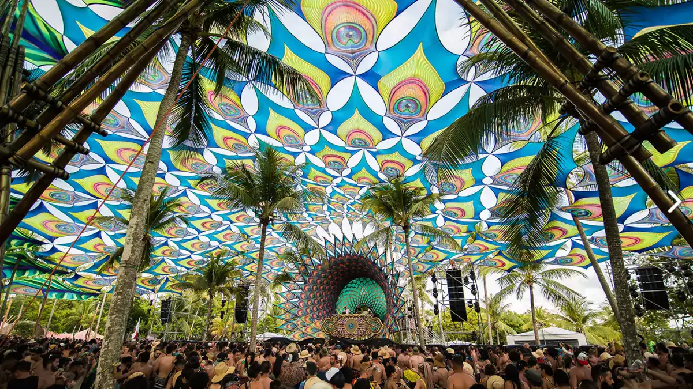
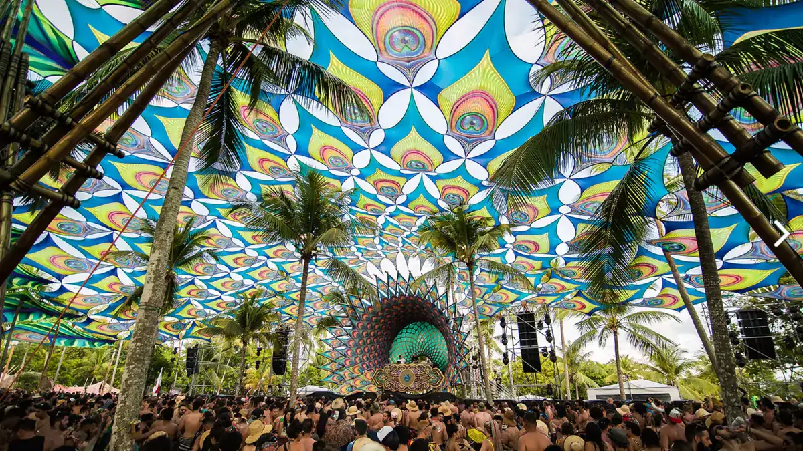
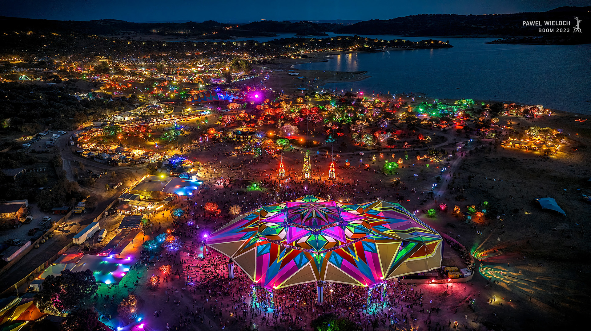
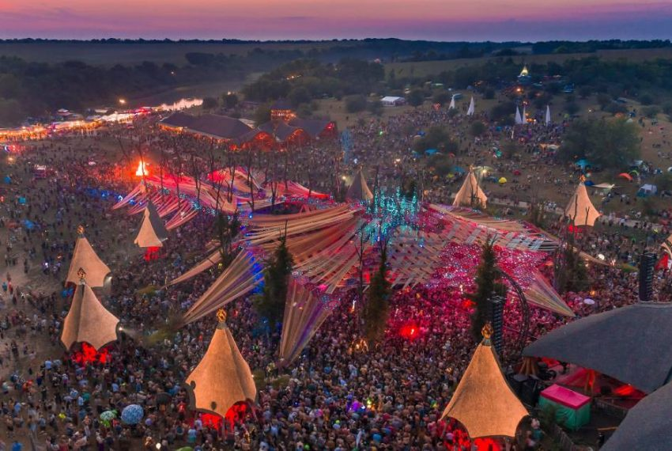
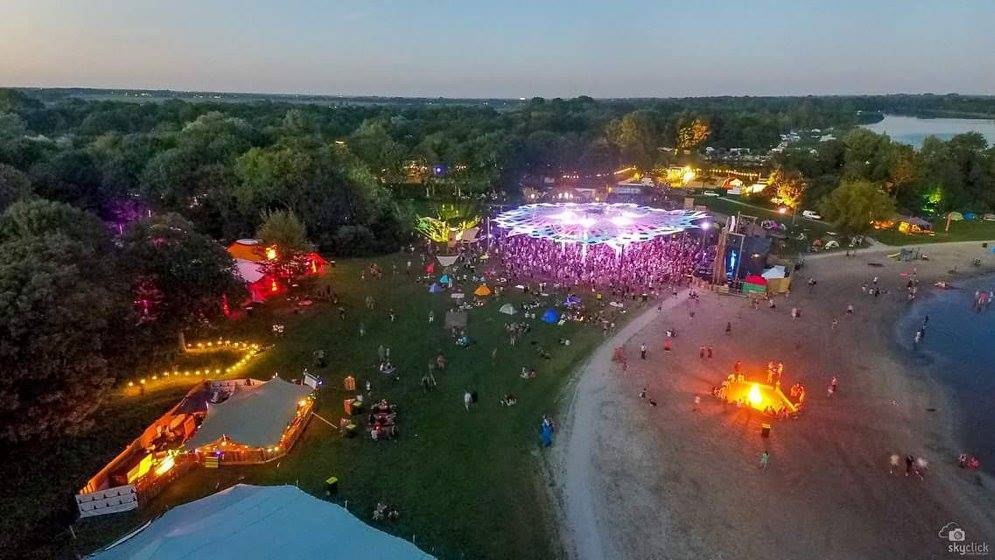

Nacionais
Universo Paralello
 

Sobre
O Universo Paralello é um dos maiores festivais de música eletrônica do Brasil, realizado a cada dois anos na paradisíaca Praia de Pratigi, em Ituberá, Bahia. O evento acontece entre o final de dezembro e o início de janeiro, celebrando a chegada do Ano Novo em um ambiente de intensa imersão artística e cultural.
O festival é conhecido por reunir um público global, atraindo amantes da música eletrônica de diferentes partes do mundo. Com foco em gêneros como psytrance, techno, house e outros estilos eletrônicos, o evento já contou com grandes nomes da cena, como Alok, Vintage Culture, Astrix e Vini Vici. Além da música, o Universo Paralello oferece uma série de atividades paralelas, como workshops, práticas de ioga, exposições de arte e performances culturais, tornando-o uma experiência imersiva e diversa.
Um dos diferenciais do festival é a sua estrutura de camping, que oferece desde opções básicas até glamping, com serviços como chuveiros e banheiros disponíveis. Outro destaque é o seu compromisso com a sustentabilidade, promovendo práticas ecológicas e incentivando os participantes a cuidarem do meio ambiente.
Além disso, o festival é um evento familiar, com áreas dedicadas para crianças e atividades voltadas para toda a família, criando um ambiente inclusivo e acessível para todas as idades. A vibe de Universo Paralello combina música, natureza, arte e espiritualidade em uma celebração única que continua a atrair milhares de pessoas em busca de uma experiência transcendental.
Localização e Data
O festival acontece na Praia de Pratigi, na Bahia, uma das praias mais bonitas do estado. Acontecendo normalmente entre o final de dezembro e o início de janeiro, coincidindo com as festividades de Ano Novo.
Liquid Sky Festival


Sobre
O Liquid Sky Festival é um dos eventos mais importantes de música eletrônica no nordeste do Brasil, especialmente voltado para gêneros como psytrance e BPMs alternativos. Com uma forte presença em locais paradisíacos, como Pipa (RN) e Maria Farinha (PE), o festival vem ganhando destaque ao longo dos anos.
A edição de 2023 foi um grande sucesso e reuniu milhares de pessoas em Pipa, oferecendo uma experiência imersiva com shows de fogos e sets de artistas renomados da cena eletrônica. Já para 2024, o evento tem colaborações com outros festivais da região, como o Baobá Festival, criando um "versus" que promete ser histórico.
Esse festival é conhecido por criar atmosferas vibrantes e sensoriais que celebram tanto a música eletrônica quanto a natureza, fazendo dele um ponto de encontro essencial para amantes do gênero na região
Localização e Data
A edição 2024 está marcada para o dia 19 de outubro de 2024 em Maria Farinha, no Pernambuco.
Festival Mundo de Oz

Sobre
O Festival Mundo de Oz é um evento de música e cultura que ocorre na Aldeia Outro Mundo, uma ecovila em Lagoinha, São Paulo.
Além de uma rica programação musical, com destaque para artistas de música eletrônica e ritmos brasileiros, o festival oferece workshops, sessões de yoga e discussões sobre sustentabilidade e permacultura. Esses elementos refletem o compromisso do evento com a conscientização ambiental e o desenvolvimento pessoal dos participantes.
O cenário do festival, a ecovila Aldeia Outro Mundo, oferece uma conexão íntima com a natureza, tornando-se um espaço propício para refletir sobre estilos de vida ecológicos e comunitários. A atmosfera do festival promove inclusão e diversidade, atraindo pessoas de diferentes culturas e origens para celebrar em harmonia.
Localização e Data
A edição de 2024 aconteceu nos dias 19 a 22 de abril em Lagoinha, São Paulo.
Internacionais
Boom Festival


História
Fundado em 1997, o Boom Festival é um dos mais icônicos festivais de música e arte psicodélica do mundo. Realizado em Idanha-a-Nova, Portugal, o evento nasceu do desejo de criar uma experiência transformadora que une música, arte e espiritualidade em um cenário único e mágico.
Desde a sua primeira edição, o Boom Festival ganhou reconhecimento internacional pela sua capacidade de oferecer uma experiência inovadora e imersiva. O festival é conhecido por seu compromisso com a criatividade, a sustentabilidade e a construção de uma comunidade global. Ele se destaca pela integração de diversos estilos musicais, incluindo psytrance, techno, e world music, além de uma programação cultural diversificada que inclui workshops, palestras e performances artísticas.
O Boom Festival é pioneiro em práticas ecológicas e de sustentabilidade, promovendo uma abordagem consciente em relação ao meio ambiente. O evento utiliza energia renovável, promove a redução de resíduos e incentiva práticas de baixo impacto ambiental. Além disso, a filosofia do festival é baseada em valores de respeito mútuo, inclusão e autoconhecimento.
Com uma proposta de celebrar a diversidade e a interconexão entre os indivíduos, o Boom Festival se tornou um ponto de encontro para pessoas de todas as partes do mundo, promovendo uma troca cultural rica e inspiradora. O festival é uma celebração do potencial humano e da criatividade, continuando a encantar e inspirar desde a sua primeira edição.
Localização e Data
O festival acontece na área de Idanha-a-Nova, em Portugal, um cenário natural deslumbrante que proporciona um ambiente perfeito para a imersão total no evento. O Boom Festival geralmente ocorre a cada dois anos, durante o mês de agosto.
Ozora Festival
FDesde a sua primeira edição, o Ozora Festival tem se destacado pela sua abordagem inovadora e pela atmosfera única que oferece. O evento é conhecido por seu line-up diversificado e de alta qualidade, que inclui artistas de psytrance, techno, e outras vertentes da música eletrônica, bem como uma programação rica em arte e cultura. O festival atrai uma audiência internacional, promovendo um intercâmbio cultural e uma celebração global da criatividade e da expressão artística./p>
Desde a sua primeira edição, o Boom Festival ganhou reconhecimento internacional pela sua capacidade de oferecer uma experiência inovadora e imersiva. O festival é conhecido por seu compromisso com a criatividade, a sustentabilidade e a construção de uma comunidade global. Ele se destaca pela integração de diversos estilos musicais, incluindo psytrance, techno, e world music, além de uma programação cultural diversificada que inclui workshops, palestras e performances artísticas.
O Ozora Festival também se destaca pelo seu compromisso com a sustentabilidade e a conscientização ambiental. O evento promove práticas ecológicas, como o uso de energia renovável, a gestão eficiente de resíduos e a preservação dos recursos naturais. Além disso, o festival oferece uma variedade de workshops e atividades voltadas para o desenvolvimento pessoal, o autoconhecimento e a espiritualidade, ampliando a experiência dos participantes.
Com uma filosofia baseada na criação de uma comunidade inclusiva e acolhedora, o Ozora Festival tem se consolidado como um ponto de encontro essencial para a cena psicodélica. O festival é uma celebração da música, da arte e da conexão humana, continuando a inspirar e encantar desde sua primeira edição.
Localização e Data
O Ozora Festival acontece em Ozora, uma pequena vila rural na Hungria, em um ambiente natural deslumbrante que contribui para a atmosfera mágica do evento. O festival geralmente ocorre no mês de agosto e se estende por uma semana.
Psy-Fi Festival
Fundado em 2012, o Psy-Fi Festival é um dos eventos mais proeminentes no cenário global de psytrance e cultura psicodélica. Realizado em Leeuwarden, na Holanda, o festival surgiu do desejo de criar uma experiência imersiva e transformadora que une música eletrônica, arte, e espiritualidade em um ambiente único.
Desde sua primeira edição, o Psy-Fi Festival se destacou por sua abordagem inovadora e pela qualidade excepcional de sua programação. O festival é conhecido por seu line-up diversificado, que inclui artistas renomados do psytrance, techno, e outros estilos eletrônicos. Além da música, o Psy-Fi oferece uma vasta gama de atividades culturais, como workshops, palestras, exposições de arte, e performances, criando um espaço multifacetado para a exploração da criatividade e do autoconhecimento.
O festival também é comprometido com a sustentabilidade e a responsabilidade ambiental. A equipe do Psy-Fi implementa práticas ecológicas, como o uso de materiais recicláveis, a gestão eficiente de resíduos, e a promoção de comportamentos conscientes entre os participantes. Esse compromisso com o meio ambiente reflete a filosofia do festival de respeito e preservação dos recursos naturais.
Com uma filosofia que valoriza a inclusão e a conexão humana, o Psy-Fi Festival se tornou um ponto de encontro essencial para a comunidade psicodélica. Ele oferece um espaço onde pessoas de diferentes culturas e origens podem se reunir, compartilhar experiências e celebrar a música e a arte.
Localização e Data
O Psy-Fi Festival ocorre em Leeuwarden, na Holanda, um cenário natural que proporciona um ambiente mágico e inspirador para o evento. O festival geralmente acontece entre julho e agosto.